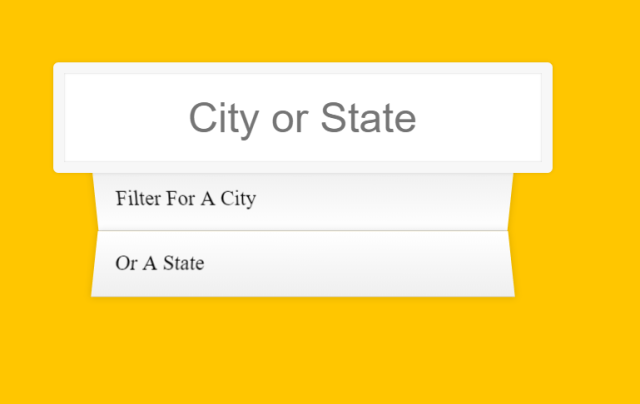

【JS30】Type Ahead
06 — Type Ahead

主題
利用fetch()來取回json檔案，並透過filter()及RegExp()等語法來製作搜尋即時顯示關聯效果！
步驟
Step1 取得資料
預設已經有建立了一個城市的.json清單，
先建立一個空的陣列 cities 並透過fetch來取得json資料存進去。
Step2 字串比對
建立function: findMatches(wordToMatch, cities)
裡面建立了一個 RegExp 用於 match 來進行字串比對
Step3 監聽
建立displayMatches()並用addEventListener來監測輸入框的change&keyup，
每次鍵盤輸入時都會觸發displeyMatches()來處理比對，
將比對結果用map來return 組合的HTML的<li>資料，
Javascript語法&備註
fetch()
fetch透過 url 會回傳一個包含 response 的 promise,回傳的 response 需要透過 json()
1 | fetch(endpoint) |
json()後可對資料再作處理
RegExp()
我有做紀錄的就是參數後面g代表全部, i代表不分大小寫..
.join()
將陣列資料用參數內的字串連接轉為一個字串(限定陣列才能用)，
範例中上了join('')來避免map回傳的陣列有,產生。
.replace()
第一個參數必須用上RegExp,第二個參數為取代後的字符串
CSS語法&備註
nth-child()
範例中利用nth-child(odd)與nth-child(even)來抓li的奇偶數
- Post title：【JS30】Type Ahead
- Post author：Neil Yang
- Create time：2019-05-15 00:00:00
- Post link：https://des86532.github.io/2019/05/15/JS30/JS30-type-ahead/
- Copyright Notice：All articles in this blog are licensed under BY-NC-SA unless stating additionally.